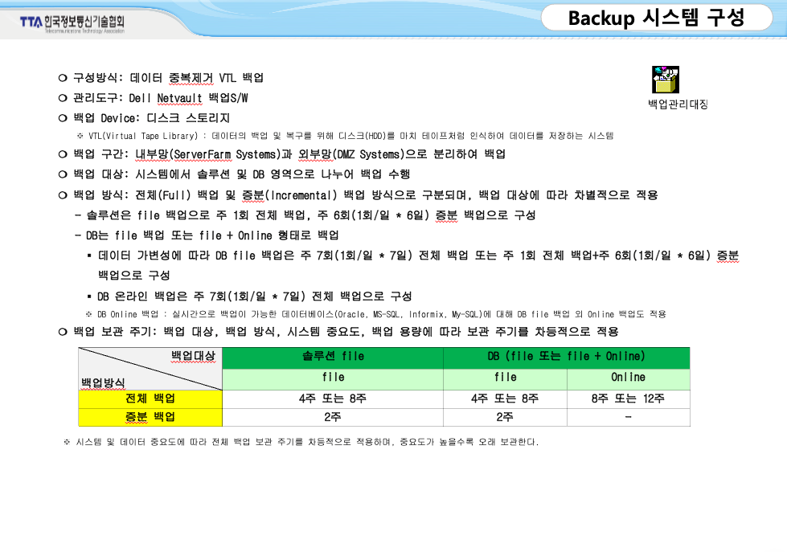
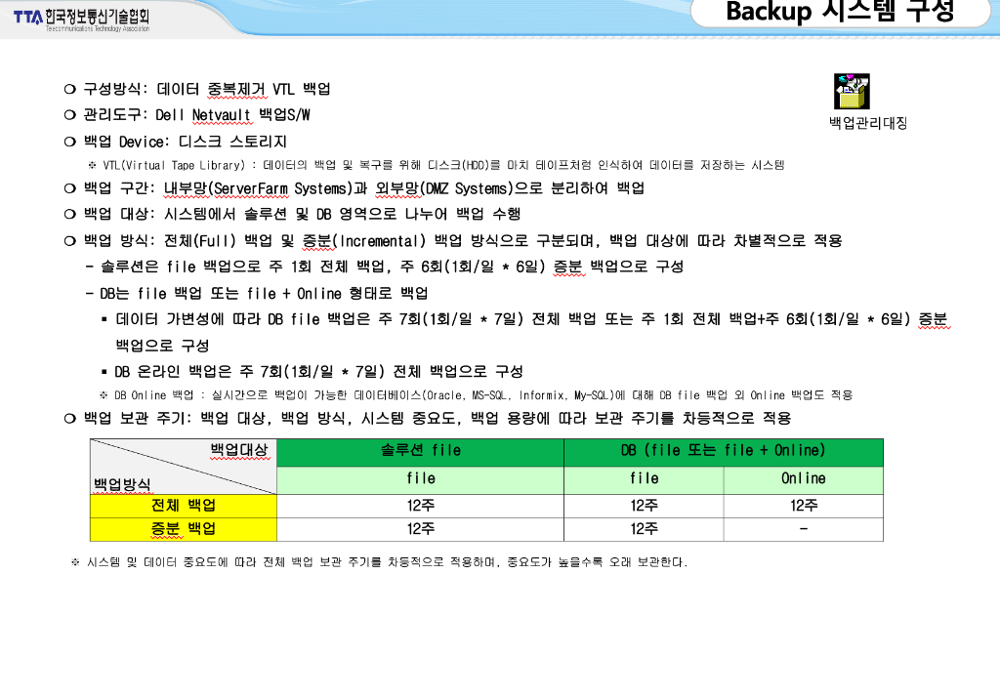
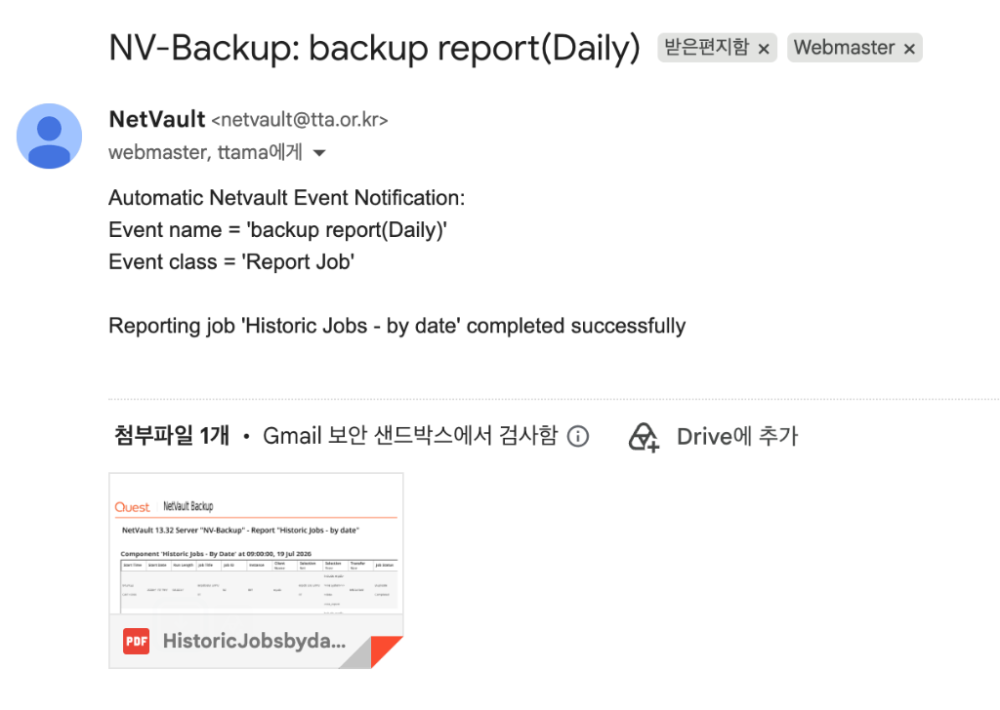
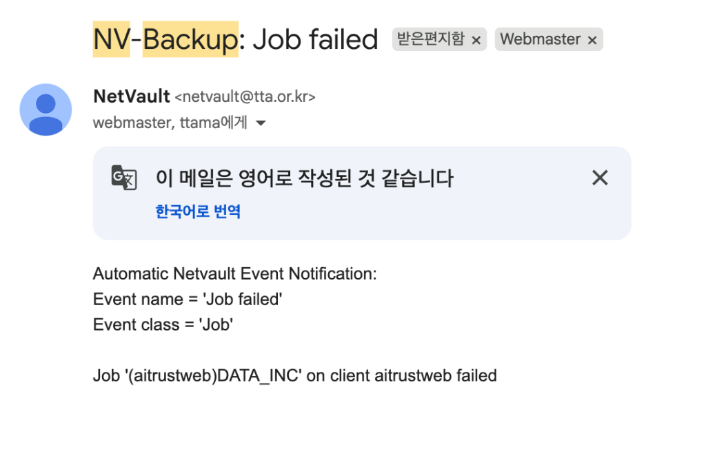

TTA 백업 인프라 전략 세미나
백업의 개념과 정의
전체 목차 안내 및 백업 방식의 기본 이해
[슬라이드 1] 표지
백업 시스템 운영
발표자
경영지원실 AX지원팀 임진묵
Date
2026-07-21 (화)
[슬라이드 2] 오늘의 목차
백업의 개념과 정의
백업의 목적 및 방식(Full, Inc, Diff) 비교
백업은 왜 필요한가
사례 기반 위협 분석 및 3-2-1 방어 원칙
TTA 백업 인프라
소프트웨어 - 스토리지 - 테이프(에어갭) 체계
운영 현황과 훈련 계획
모니터링 현황 및 DR 훈련 진행 방식 안내
[슬라이드 3] 주요 백업 방식 비교
🔄 쉽게 이해하는 백업 방식의 차이와 관계
백업은 항상 전체 데이터 원본인 '풀 백업'을 먼저 해두어야 시작할 수 있습니다. 이후 새로 데이터가 늘어날 때, 가장 최근 백업 시점 이후 늘어난 데이터만 보관할 것인가(증분), 아니면 마지막 풀 백업 시점 이후 늘어난 누적분을 보관할 것인가(차등)의 관계를 가집니다.
복잡하게 계산하지 않고 매번 데이터를 통째로 다 백업해 두는 방식입니다.
백업하는 데 시간이 가장 오래 걸리지만, 데이터 전체가 하나로 뭉쳐 있어 관리하기가 쉽습니다.
가장 최근 백업(풀 혹은 이전 증분) 시점 이후 변경된 데이터만 저장합니다.
가장 최근에 기록된 시점과 비교해 새로 추가/변경된 부분만 저장하므로 용량이 매우 절약됩니다.
최초 풀 백업 + 월요일 증분 + 화요일 증분 + 수요일 증분 등 모든 백업 체인을 순서대로 병합해야 합니다.
일요일 풀 백업 이후 누적된 월요일 변경분, 화요일엔 월+화 변경분을 누적해서 백업합니다.
중간 단계는 생략하고 오직 기준점(풀 백업) 이후 늘어난 데이터 전체를 매번 누적하여 저장합니다.
최초 풀 백업본 + 복구 시점의 당일 차등 백업본 단 2개만 있으면 완료됩니다.
| 비교 항목 | 풀(Full) 백업 | 증분(Incremental) 백업 | 차등(Differential) 백업 |
|---|---|---|---|
| 개념 요약 | 전체를 매번 복사 | 가장 최근 백업 시점 이후 변경분만 복사 | 마지막 풀 백업 시점 이후 누적 변경분 모두 복사 |
| 백업 속도 | 가장 느림 | 가장 빠름 | 보통 (시간 갈수록 용량 및 시간 증가) |
| 복구 속도 | 가장 빠름 (1개 복원) | 가장 느림 (모든 체인 파일 병합 필요) | 빠름 (풀 백업본 + 최근 차등 백업본 2개만 결합) |
| 저장 공간 효율 | 낮음 (매우 비효율적) | 매우 높음 (중복 데이터 최소화) | 보통 |
| 장애 위험 및 관리 | 낮음 (단일 파일 관리) * 풀 백업 자체 손상 시 복원 불가 |
높음 (필요 파일 수가 많아 체인 중 하나만 깨져도 링크가 끊어져 전체 복구 불가) | 보통 (풀 백업본과 해당 복구일자 백업본만 검증되면 가능) |
📅 대상별 백업 실행 주기 스케줄 (주간 운영 정책)
⏳ 데이터 보관 주기 상향 통합 정책 (기존 vs 신규)
❌ 기존 기본 정책 (변경 전)

✅ 변경 후 최신 정책 (12주 상향 통합)

💡 세미나 FAQ / Q&A 대비용 참고 자료
기존에는 시스템 및 데이터의 중요도(영향도)에 따라 차등 적용했습니다. 주요 핵심 운영 시스템 DB 등은 긴 장애 대응 가능 시간을 확보하기 위해 8주 동안 보관하고, 중요도가 상대적으로 낮거나 데이터 누적 속도가 빠른 일반 업무용 파일/DB는 4주 보관을 기준으로 분리 관리했습니다. (※ 현재는 장애 대처 안정성을 최우선으로 확보하기 위해 중요도 구분 없이 모두 최장 주기인 12주로 단일화(상향 통합) 완료했습니다.)
크게 복구 신뢰성 확보와 가용성(RTO) 단축을 위해서입니다.
① 복구 신뢰성: DB Online 백업은 가동 중인 데이터베이스(Oracle, MS-SQL 등)의 활성 블록을 백업합니다. 여러 개의 증분 파일을 하나씩 누적 결합하여 복구하게 되면, 중간 체인의 파일 중 단 하나라도 오류가 발생할 경우 전체 DB 정합성이 깨져 복구가 완전히 불가능해집니다.
② 복구 시간(RTO) 단축: 장애 시 핵심 서비스를 최대한 빠르게 정상화해야 하므로, 복잡한 증분 백업 결합 단계 없이 '풀 백업본 단 1개'로 즉시 복구를 끝내기 위함입니다.
백업은 왜 필요한가
위협 요소를 인식하고 데이터 보호 전략의 당위성 공감하기
[슬라이드 4] 오프닝 질문
"만약 전산실 화재, 정전 같은 재난 상황이나 외부 공격이 발생한다면,
우리는 언제까지, 얼마나 온전하게 복구할 수 있을까요?"
[슬라이드 5] 지역적 재난 대비: 원격지 소산 백업
본원 마비 시에도 데이터는 안전하게 보존됩니다
[슬라이드 6] 완벽한 백업을 위한 3-2-1 원칙
위험을 분산시키고 데이터를 안전하게 보호하는 업계 표준 전략
개의 데이터 복사본 유지
원본 1개 + 백업본 2개
가지의 서로 다른 저장 매체 사용
예: 디스크 스토리지 + 테이프
곳은 물리적으로 떨어진 곳(오프라인)에 소산
화재, 지진 및 랜섬웨어 등 치명적 재난 대비
[슬라이드 7] TTA 인프라로의 연결
"그렇다면, 방금 말씀드린 랜섬웨어 위협 속에서
우리 TTA는 이 3-2-1 원칙을 어떻게 실제 솔루션으로 구현하고 있을까요?"
TTA 백업 인프라 아키텍처
NetVault, Rapid Recovery, QoreStor를 활용한 철통 방어 체계
[슬라이드 8] 전체 아키텍처 한 장 요약
운영 환경
vCenter/ESXi VM,
DB, File Server
NetVault
중요 파일/데이터 복사
Rapid Recovery
컴퓨터 시스템 통째 복사
QoreStor
데이터 저장 창고
ML3 테이프
안전한 오프라인 금고
[슬라이드 9] 백업 프로그램의 쉬운 역할
- NetVault (파일/데이터 전담 백업) 회사에서 쓰는 중요한 문서 파일이나 데이터베이스를 **하나하나 골라서 안전하게 복사해 두는 프로그램**입니다.
- Rapid Recovery (컴퓨터 시스템 통째 백업) 컴퓨터의 모든 설정을 **통째로 사진 찍듯 복사해 두었다가**, 시스템 고장 시 **클릭 한 번으로 즉시 되살려주는 프로그램**입니다.
[슬라이드 10] QoreStor 저장 효율성
백업을 저장할 때, **중복되는 똑같은 내용을 하나만 남겨서 창고 자리를 90%나 아껴주는** 똑똑한 저장소입니다.
저장 공간 약 90% 공간 절약
운영 현황과 검증
실시간 상태 모니터링 체계와 신속한 알림 시스템
[슬라이드 11] 백업 완료 자동 리포트 체계
모든 백업 작업이 정상적으로 종료되면 시스템에서 자동으로 "completed successfully" 결과 메시지와 함께 일일 백업 수행 내역이 정리된 리포트 메일을 발송합니다.

[슬라이드 12] 백업 실패 자동 알림 체계
작업 실패(Job failed) 감지 시 담당자에게 즉각적인 SMTP 경보 메일 발송

마무리 및 안내
[슬라이드 13] 재해복구 모의훈련 시행 계획
📅 7월부터 시나리오 작성 및 준비 단계 착수 ➡️ 9월 중 본격 모의훈련 수행
🗺️ 재해복구 모의훈련 프로세스 흐름도
서현 본원 데이터 유실 상황 모델링
Guest OS 생성 및 야탑 원격망 포트 점검
야탑 백업본을 가져와 정상 복구 시연
🎯 주요 훈련 내용
- • 가상 재난 상황 설정: 서현 본원에서 데이터가 완전히 유실되거나 손상된 최악의 시나리오 적용
- • 원격지 소산 백업 회복: 야탑 AI Campus(원격지) 백업본을 네트워크를 통해 전송받아 정상 복구되는지 검증
- • 복구 프로세스 시연: 데이터 복원 전 과정을 눈으로 직접 모니터링하며 상세하게 시연할 수 있도록 시각화 데모 구성
Q & A
질문이 있으시면 자유롭게 말씀해 주시기 바랍니다.